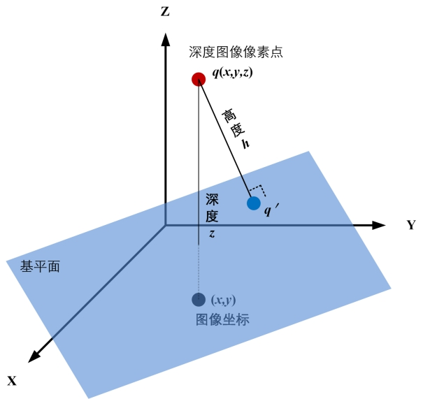
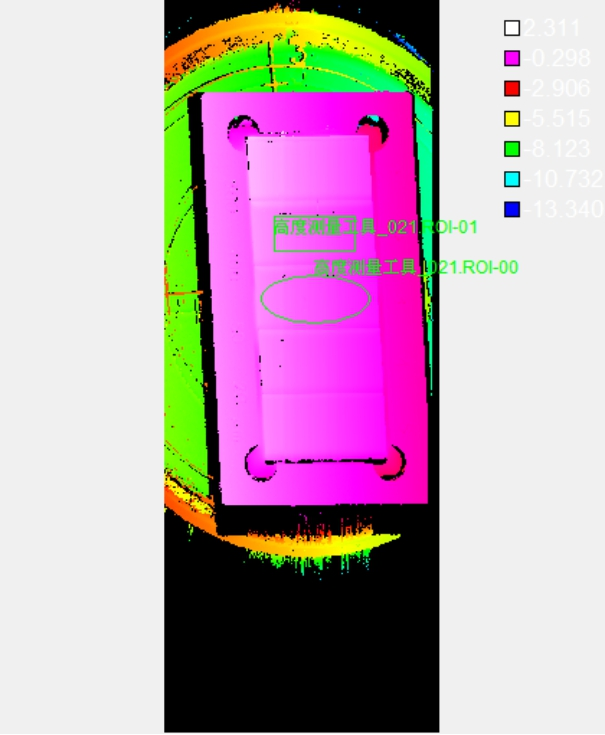
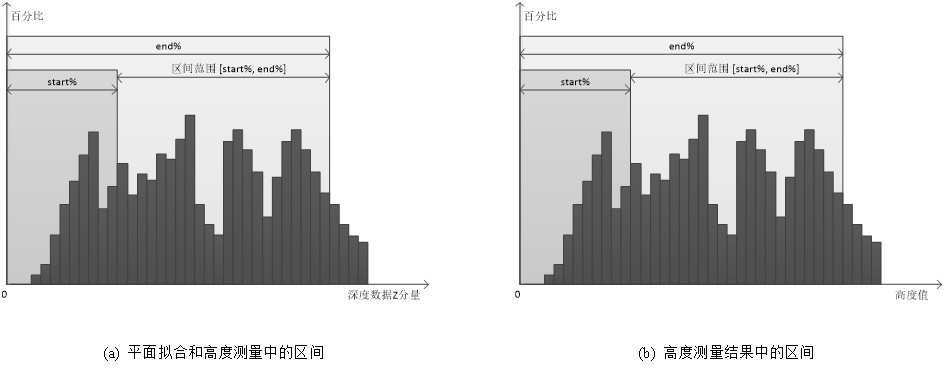

在3D测量中，高度测量工具主要是获取深度图像中检测区域内三维空间点到指定基平面的高度距离，并完成高度最小值、最大值、均值、中值等高度信息的统计，帮助用户更加精确的获取高度距离的分布情况。一个三维点（深度图像像素点）到基平面的高度如图1所示。

图2所示为高度测量工具示意图。在高度测量工具中，支持设定多个测量区域，且可以对高度测量区域的形状和特征等进行配置。如图2所示，总共有两个测量区域，这个两个区域的形状分别为矩形、椭圆，且可以分别测量这两个区域内的特征点（如均值、中值等）或者所有数据到基平面的高度值的统计信息。

| 分类 | 参数名称 | 参数描述 |
|---|---|---|
| 属性窗口 | ROI数量 | 该参数用于指定测量区域的数量，最多支持100个ROI。 |
| ROI索引 | 该参数用于选择第i个测量区域，并对其参数进行设置。 | |
| ROI类型 | 待测量区域，分为7种：整幅图像、矩形、仿射矩形、圆形、圆环、椭圆、多边形。 | |
| 计算取反 | 当选择“是”时，高度计算值符号取反，主要应用于凹槽、厚度等向下计算高度为正的场合。 | |
| 测量点特征 | 选取ROI区域内的某种特征点进行高度测量，分为6种：均值、中值、质心、Z最大、Z最小、所有数据。 | |
| 区间上、下限 | 测量区域的深度数据按照Z分量从小到大排序，然后再获取位于start% ~ end%的深度数据的均值，中值等特征点。取值范围为下限[0,100)，上限(0,100]，且下限小于上限。 | |
| 结果区间上、下限 | 测量结果的高度值从小到大排序，然后再获取位于start% ~ end%的高度值的均值，中值等特征点。取值范围为下限[0,100)，上限(0,100]，且下限小于上限。 | |
| 统计结果区间上、下限 | 所有ROI区域测量的高度结果从小到大排序，然后再获取位于start% ~ end%的高度值的均值，中值等特征点，用于整体测量结果的统计输出。取值范围为下限[0,100)，上限(0,100]，且下限小于上限。 | |
| 系数补偿 | 测量结果系数补偿，一般为1，用于补偿成像等系统误差。 | |
| 固定补偿 | 测量结果固定补偿，一般为0，用于补偿成像等系统误差。 | |
| 高度最大值上限 | 取值范围为[-100, 100]，且下限应小于等于上限。 | |
| 高度最大值下限 | 取值范围为[-100, 100]，且下限应小于等于上限。 | |
| 高度最小值上限 | 取值范围为[-100, 100]，且下限应小于等于上限。 | |
| 高度最小值下限 | 取值范围为[-100, 100]，且下限应小于等于上限。 | |
| 高度均值上限 | 取值范围为[-100, 100]，且下限应小于等于上限。 | |
| 高度均值下限 | 取值范围为[-100, 100]，且下限应小于等于上限。 | |
| 高度中值上限 | 取值范围为[-100, 100]，且下限应小于等于上限。 | |
| 高度中值下限 | 取值范围为[-100, 100]，且下限应小于等于上限。 | |
| 统计高度最大值上限 | 取值范围为[-100, 100]，且下限应小于等于上限。 | |
| 统计高度最大值下限 | 取值范围为[-100, 100]，且下限应小于等于上限。 | |
| 统计高度最小值上限 | 取值范围为[-100, 100]，且下限应小于等于上限。 | |
| 统计高度最小值下限 | 取值范围为[-100, 100]，且下限应小于等于上限。 | |
| 统计高度均值上限 | 取值范围为[-100, 100]，且下限应小于等于上限。 | |
| 统计高度均值下限 | 取值范围为[-100, 100]，且下限应小于等于上限。 | |
| 统计高度中值上限 | 取值范围为[-100, 100]，且下限应小于等于上限。 | |
| 统计高度中值下限 | 取值范围为[-100, 100]，且下限应小于等于上限。 | |
| 图像窗口 | 深度图像 | 显示待检测的深度图像，显示为伪彩色图像。 |
| 测量区域 | 在图像上显示待测量区域。 | |
| 数据链 | 深度图像 | 输入待检测的深度图像。 |
| 基平面 | 高度测量中使用的基准平面。 | |
| 二维线性变换 | 目标相对于模板的平移、旋转、缩放变换。 | |
| 高级界面 | 无 | 无 |
| 分类 | 参数名称 | 参数描述 |
|---|---|---|
| 监视窗口 | 深度图像 | 深度图像的长宽和像素大小，以及深度数据参数。 |
| 高度测量结果 | 显示每个测量区域的高度测量结果，包括每个测量区域内的高度最大值、最小值、均值、中值，以及所有测量区域测量结果的统计结果。 | |
| 执行结果 | 工具执行结果。 | |
| 执行时间 | 工具执行时间。 | |
| 图像窗口 | 深度图像 | 显示检测的深度图像，显示为伪彩色图像。 |
| 数据链 | 同监视窗口参数，供后续工具使用。 |
设区间范围为[start%, end%]，则只有位于区间范围内的数据才是有效的；如图3(a)所示，当对测量区域进行参数配置时，将区域内的深度数据按照Z分量从小到大进行排序，然后再获取位于start% ~ end%的深度数据的均值，中值等特征点；如图3(b)所示，在高度测量结果中时，将高度值按照从小到大进行排序，然后再获取位于start% ~ end%内的高度值的均值，中值等。

Step 1 测量区域的参数设置
主要需要对测量区域的个数、形状、区域内的特征点类型和区间的范围进行设置。其中，用户可自行指定测量区域的数量；测量区域的形状分为7种：整幅图像、矩形、仿射矩形、圆形、圆环、椭圆、多边形；测量区域内的特征点类型分为6种：均值、中值、质心、Z最大、Z最小、所有数据。
Step 2 高度测量结果的参数设置
接着需要对每一个测量区域的高度测量结果的参数进行设置。需要设置的参数有：区间范围。用户可根据实际的项目需求对这些参数进行设置。
Step 3 执行高度测量和输出结果
在上述步骤之后，就可以执行高度测量。高度测量的输出结果主要包括：每一个测量区域内的高度特征值（最大值，最小值，均值、中值）以及所有测量区域内高度特征值的一个统计结果。
Step 4 补偿和结果判定
若需要对计算结果进行补偿或者判定的话，可以对系数补偿、固定补偿、判定依据、最大值、最小值进行设置。
参见“\Samples\3D\深度图\3D测量工具.gvp”。